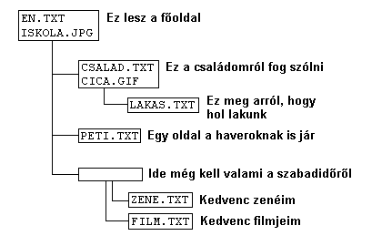

Szedd össze, amid van!
- Lista a rendelkezésre álló fileokról!
- Fileok elrendezése, csoportosítása

Kezdõlap szerepe
Üdvözölje az olvasót, és bemutassa az ott található anyagokat, segítsen eligazodni.
(A témák részletes kifejtésébe ráérsz a késõbbi oldalakon belefogni.)
Kevés szöveg legyen  ne kelljen görgetni a
szöveget (navigálást lassítja, és esetleg elveszi az olvasó
kedvét a site-tól)
ne kelljen görgetni a
szöveget (navigálást lassítja, és esetleg elveszi az olvasó
kedvét a site-tól)
Alapelv:
Ha a szöveg az adott média elem (kép, animáció, mozgókép) nélkül lényegesen kevesebbet ér, illetve az adott média elem a szöveget illusztrálja, akkor célszerû az oldalba beilleszteni, ha csak kiegészítõ információ, akkor inkább külön linkként érdemes elhelyezni.